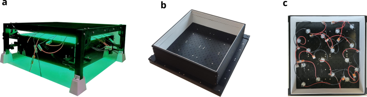
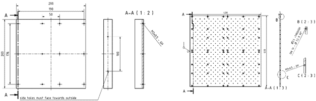
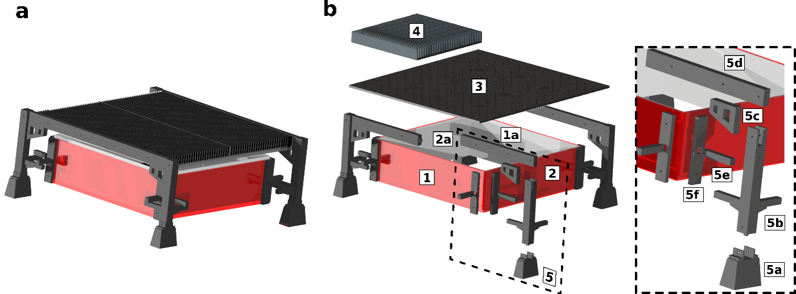
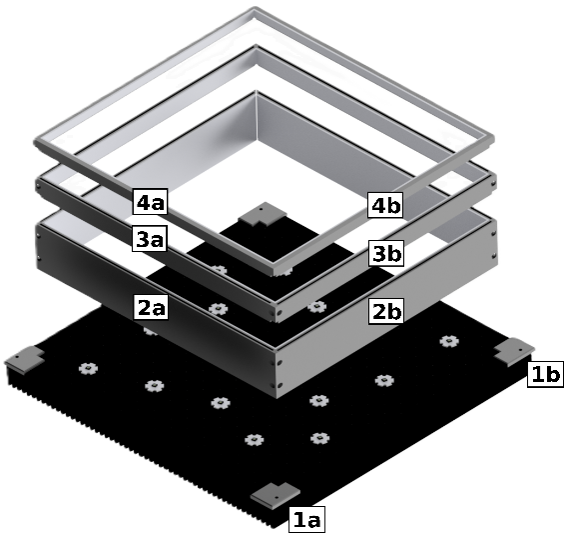

Direct Irradiation Module Assembly
Overview
This page describes the mechanical assembly of the direct LED irradiation module developed in this work, including the heat sink assembly, LED mounting, and the integration of diffuse reflector modules.
All CAD models of the heat sinks and 3D-printed components are provided in the modularPhotoreactor GitHub repository [1]: https://github.com/photonZfeed/modularPhotoreactor
{kind=link}

Figure 2 Overview of the assembled direct irradiation module. a Fixed height reflector, b-c modular reflector with adjustable height.
Heat Sink and LED Mounting
The irradiation module is based on a 400 mm × 400 mm anodized aluminum base plate, which serves as both mechanical support and thermal interface for the LEDs. LEDs are mounted onto the aluminum plate using screws, with a fixed center-to-center spacing of 25 mm, resulting in a total of 169 possible LED mounting positions. To ensure sufficient heat dissipation during operation, the aluminum plate is mounted onto four 200 mm × 200 mm finned heat sinks (RS PRO, 903-3090). A technical drawing of the heat sink assembly is shown in Table 1.
To operate the LEDs, up to 2 × 8 LEDs were connected in series. The LED rows were operated at constant current using two programmable DC power supplies (Korad Lab KA3005P). All required parts are listed in Table 1.
{kind=link}

Figure 3 Technical drawings of heatsink dimensions and assembly. Four 200 mm x 200 mm aluminum heatsinks (RS PRO, 903 3090) (left) and the corresponding aluminum LED mounting plate 400 mm x 400 mm with 225 LED mounting positions (right)
Nr. |
Component |
Material / Reference |
Repository filename |
|---|---|---|---|
1 |
Aluminum LED mounting plate, 400 mm × 400 mm |
Aluminum, custom made |
|
2 |
Aluminum heat sink, 200 mm × 200 mm |
RS PRO, 9033090 |
|
3 |
LEDs (e.g. LST1-01G01-UV00-00) |
— |
e.g. Mouser Electronics |
4 |
Screws for LED mounting (M3) |
Stainless steel |
Standard |
5 |
Power supplies (KA3005P) |
— |
Korad Lab |
Reflector Modules
In this work, two different reflector modules were developed to provide diffuse reflectance around the LED irradiation area: a reflector with fixed height and a modular reflector with adjustable height (Figure 2). In both cases, the reflector panels were manufactured from self-adhesive optical PTFE sheets (OPF200.XXX.300-U-K, BERGHOF Fluoroplastics) with a thickness of 2 mm, providing high diffuse reflectivity in the UV and visible spectral range.
Reflector with Fixed Height
The fixed-height reflector module was developed for operation as an extension of the multi-batch screening photoreactor on a roller shaker (IKA Roller Shaker 10 Digital).
The reflector consists of four vertical walls manufactured from red Plexiglass and lined with 2 mm PTFE sheets on the inner surfaces.:
Two walls with a length of 330 mm
Two walls with a length of 350 mm
Uniform wall height of 100 mm
The walls are manufactured from red Plexiglass and lined with 2 mm PTFE sheets on the inner surfaces.
{kind=link}

Figure 4 a Assembly of reflector with fixed height and b mounting scheme and components of direct irradiation module
A 25 mm vertical gap between the reflector walls and the heat sink ensures sufficient airflow for convective cooling.
Table 2 lists all components required for assembling the fixed-height reflector module, including references to the corresponding CAD files in the modularPhotoreactor repository
Nr. |
Component |
Material / Reference |
Repository filename |
|---|---|---|---|
1 |
PTFE reflector support, 350 mm × 100 mm |
PMMA (red Plexiglass) |
— |
1a |
PTFE reflector lining, 350 mm × 100 mm |
OPF200.XXX.300-U-K, BERGHOF Fluoroplastics |
— |
2 |
PTFE reflector support, 330 mm × 100 mm |
PMMA (red Plexiglass) |
— |
2a |
PTFE reflector lining, 330 mm × 100 mm |
OPF200.XXX.300-U-K, BERGHOF Fluoroplastics |
— |
3 |
3D-printed reflector and heat sink holder (assembly) |
ABS |
|
5a |
Holder feet |
ABS |
|
5b |
Corner pillars |
ABS |
corner_pillar_1.stl corner_pillar_2.stl corner_pillar_3.stl corner_pillar_4.stl |
5c |
Corner pillar support |
ABS |
|
5d |
Heat sink holder (male / female) |
ABS |
|
5e |
Reflector holder |
ABS |
|
5f |
Corner pillar connector (330 mm / 350 mm) |
ABS |
corner_pillar_connector_330mm.stl corner_pillar_connector_350mm.stl |
Modular Reflector with Adjustable Height
For systematic investigation of LED-to-detector distance effects, a modular, height-adjustable reflector system was developed.
The modular reflector consists of three stackable segments with heights of 60 mm, 20 mm, and 10 mm as illustrated in Figure 5. By combining these elements, total reflector heights of 60 mm, 80 mm, and 90 mm can be realized. The bill of materials for the modular reflector system is provided in Table 3.
The reflector modules are placed directly onto the LED-mounted heat sink without clearance. The bottom plane of the reflector in contact with the heat sink defines the optical reference plane for all z-distance definitions.
Reproducible positioning and stacking are ensured by 3D-printed corner alignment holders, which prevent lateral displacement during assembly and operation.
{kind=link}

Figure 5 Overview of the modular reflector components.
Nr. |
Component |
Material / Reference |
Repository filename |
|---|---|---|---|
1a |
Corner reflector holder a |
ABS |
|
1b |
Corner reflector holder b |
ABS |
|
2a |
Reflector holder 330 mm length, 60 mm height |
ABS |
|
2b |
Reflector holder 350 mm length, 60 mm height |
ABS |
|
3a |
Reflector holder 330 mm length, 20 mm height |
ABS |
|
3b |
Reflector holder 350 mm length, 20 mm height |
ABS |
|
4a |
Reflector holder 330 mm length, 10 mm height |
ABS |
|
4b |
Reflector holder 350 mm length, 10 mm height |
ABS |
|
5 |
PTFE reflector lining |
OPF200.XXX.300-U-K, BERGHOF Fluoroplastics |
— |